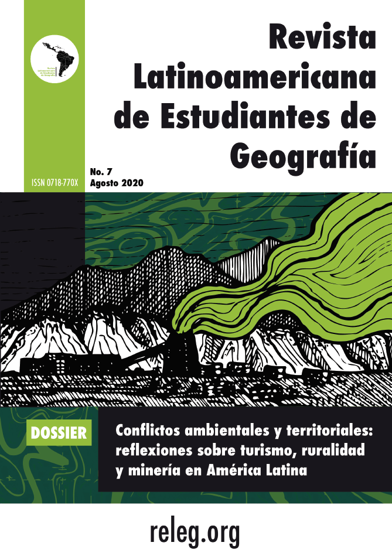

Apresentação
Número atual
Arquivo
Chamadas
Comitê Editorial
Regras editoriais
História e estatísticas
Apresentações
Contato
Español

No. 7 (2020)
1
Editorial
DOSSIER
Conflictos ambientales y territoriales: reflexiones sobre turismo, ruralidad y minería en América Latina
8
Análise ambiental no Município de Mostardas/Rio Grande Do Sul/Brasil: Proposta de um empreendimento de turismo fotográfico
Ligian Cristiano Gomes
Mateus Pessetti
22
Conflitos territoriais da estrangeirização da terra no Paraguai
Lorena Izá Pereira
37
Sobre el proceso de restitución de tierras: una mirada al movimiento campesino colombiano de cara al proceso de paz
Evelin Yineth Prado Martínez
Giovanny Alvarado Suárez
51
Minería tóxica y fracking. Deletéreo impacto social y medioambiental
Betty Zanolli Fabila
68
Nueva Ruralidad y Multifuncionalidad del Programa Pueblos Mágicos en México
Erika Paulina Ramírez Rivera
GEOGRAFÍA Y EDUCACIÓN
82
Programa de inclusión educativa “Vos Podes”: ¿nuevos formatos escolares y nuevas posibilidades? La importancia de la geografía en este contexto
Melina Luján Ardusso
Micaela Anahí Herlein
Wanda Dominique Martínez
CUENTO
96
Nina
Bryan Paúl Apolo Viera
102
El retoño del jalamate
Elvia Tristán
105
Normas editoriales